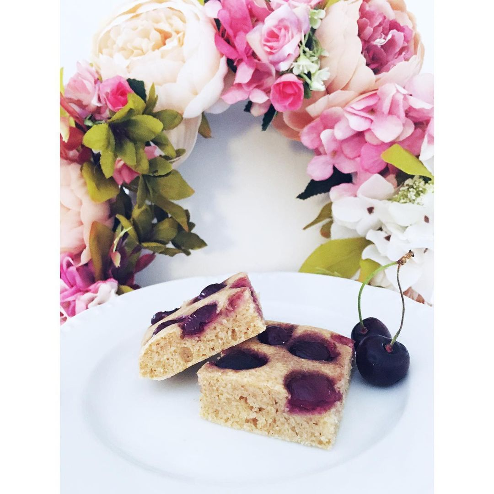

Čerešňová bublanina — Normy Jedál
Tak zas a znova nízkokalorická a zdravšia verzia bublaniny, ale tentokrát s čerešnami 🍒❤️ •
200g hladkej špaldovej múky
1 kypriaci prášok do pečiva
1 vajce
1 polievková lyžica kokosového oleja
3 dcl mlieka
10 kvapiek flavdrops (použila som White chocolate od @myproteinsk - táto príchuť je skvelá, dodá sladkosť, ale nie je výrazne aromatická a neprebije ostatné chute)
Vymixovať žĺtko+olej+mlieko+flavdrops, zvlášť sneh z bielka a zvlášť múka+kypriaci. Potom opatrne varechou spojiť všetky 3 zmesy dokopy, navrch ovocie a na 15-20 min do rúry na 180’C 🙂 hotovo! ❤️
#baking #bakingtime #zdravepecenie #experiment #bublanina #bublaninabezcukru #chudnemjedlom #mojavelkapremena #ceresnovabublanina #peceniebezcukru